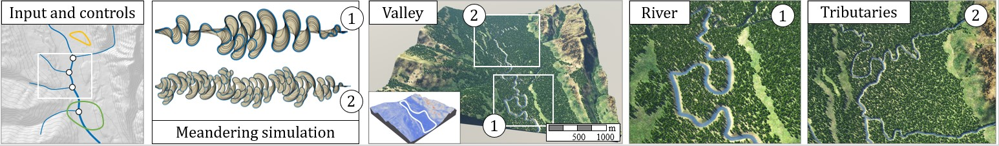

Axel Paris - Research Scientist
Home
Publications
Resume
Email
Twitter
Authoring and simulating meandering rivers
September 21, 2023.

Preprint
PDF
Video
Code
We present a method for interactively authoring and simulating meandering river networks.
Starting from a terrain with an initial low-resolution network encoded as a directed graph,
we simulate the evolution of the path of the different river channels using a physically-based migration
equation augmented with control terms. The curvature-based terms in the equation allow us to reproduce
phenomena identified in geomorphology, such as downstream migration of bends. Control terms account for
the influence of the landscape topography and user-defined river trajectory constraints.
Our model implements abrupt events that shape meandering networks, such as cutoffs forming oxbow lakes and avulsions.
We visually show the effectiveness of our method and compare the generated networks quantitatively to river
data by analyzing sinuosity and wavelength metrics. Our vector-based model runs at interactive rates, allowing
for efficient authoring of large-scale meandering networks.
@article{Paris2023Meanders,
author = {Paris, Axel and Gu{\'e}rin, Eric and Collon, Pauline and Galin, Eric},
title = {Authoring and simulating meandering rivers},
journal = {ACM Transactions on Graphics (Proceedings of Siggraph Asia 2023)},
volume = {42},
number = {6},
year = {2023},
pages = {1--14}
}